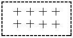
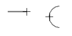

Center Mark command
The Center Mark command  adds a center mark based on what you select and on the options you select on the
Center Mark command bar. You can add center marks to simple 2D geometry and as PMI to 3D features, such as
slots and holes.
adds a center mark based on what you select and on the options you select on the
Center Mark command bar. You can add center marks to simple 2D geometry and as PMI to 3D features, such as
slots and holes.
You can modify the center mark properties using the Center Line and Center Mark Properties dialog box.
You can add a center mark:
-
At the center of a curved element, such as a circle or arc

-
Associative to a point you place, to give the appearance of a center mark in free space

-
At the midpoint or endpoint of an arc or line

You can place an angular dimension to a center mark line or projection line using the Angle Between command and the Horizontal/Vertical Orientation option on the Dimension command bar.

You also can use the Angle Between command to place a dimension to the center mark center point.
How do I
Automatically create centerlines and center marks in a drawing viewAutomatically remove centerlines and center marks from a drawing view
Place a center mark
Place a centerline midway between two lines
Place a centerline on a slot
Place a center axis on a cylinder or hole feature
Example: Dimension a curved slot
Place a bolt hole circle
Learn more
Centerlines, center marks, and bolt hole circlesLook up more details
Automatic Centerlines commandAutomatic Centerlines command bar
Centerline and Center Mark Options dialog box
Center Mark command bar
Centerline command
Centerline command bar
Center Line and Center Mark Properties dialog box
Bolt Hole Circle command
Bolt Hole Circle command bar
Bolt Hole Circle Properties dialog box